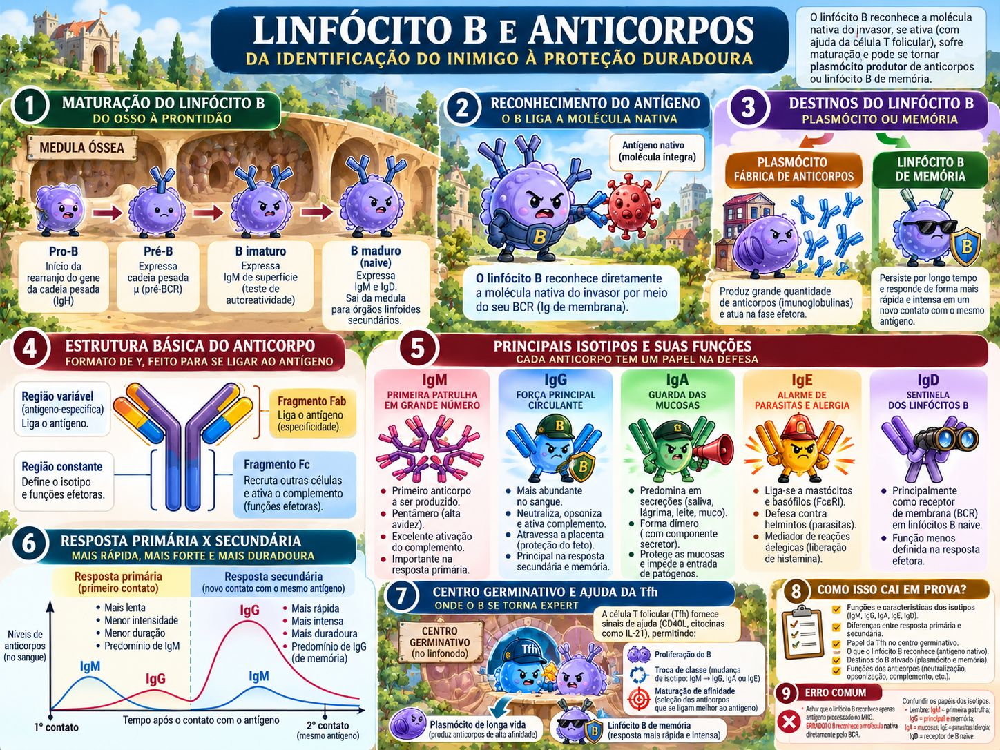

Aula 6 ampliada — ativação de linfócitos B
O que os slides acrescentam à Parte 7: chegada do antígeno ao folículo, BCR/CR2, encontro T–B, Tfh e centro germinativo.

Da vacina no músculo ao anticorpo no sangue
O caso-guia do material é a vacina contra hepatite B: entra HBsAg proteico no deltoide; meses depois surgem anticorpos anti-HBs de alta afinidade e memória duradoura. A Parte 16 explica todos os passos que a Parte 7 não detalhava.
BCR liga antígeno
sinais do B + ajuda T
expansão clonal
plasmócito e memória
Como o antígeno chega ao B certo?
| Antígeno | Como chega ao folículo | Ideia |
|---|---|---|
| Pequeno/solúvel | Condutos do linfonodo | Pode alcançar B diretamente. |
| Grande/micróbio/complexo | Macrófagos do seio subcapsular e outras células transportam | Grande demais para condutos. |
| Ligado a complemento | Retido em FDC por receptores de complemento/Fc | FDC exibe antígeno intacto para B. |
BCR: ao mesmo tempo sensor e boca
Sensor
IgM/IgD reconhecem antígeno; Igα/Igβ transmitem o sinal por ITAMs.
Boca
O BCR internaliza a proteína ligada; ela é processada e apresentada em MHC II para uma célula T específica.
O correceptor CR2/CD21, junto de CD19 e CD81, reconhece C3d ligado ao antígeno e reduz drasticamente o limiar de ativação: a imunidade inata “avaliza” que o alvo merece atenção.
Três populações B, três estilos de resposta
B folicular
Órgãos linfoides; antígeno proteico; resposta T-dependente com troca de classe, alta afinidade e memória.
B da zona marginal
Baço; responde rapidamente a antígenos multivalentes no sangue, especialmente polissacarídeos capsulares.
B-1
Mucosas/peritônio; produz parte dos anticorpos naturais e responde a antígenos T-independentes.
Encontro T–B: dois CEPs que convergem na fronteira do folículo
reconhece antígeno e ↑CCR7
é ativada por DC e ↑CXCR5
B apresenta peptídeo em MHC II
CD40L + citocinas
Duas saídas ocorrem em paralelo: um foco extrafolicular rápido, com plasmócitos de vida curta e muita IgM, e o centro germinativo, mais lento, onde a qualidade da resposta é refinada.
Tfh: a CD4 especializada em dar qualidade à resposta B
| Marca | Função |
|---|---|
| CXCR5 | Leva a Tfh ao folículo. |
| Bcl-6 | Fator de transcrição mestre. |
| ICOS | Ajuda na diferenciação/sustentação. |
| PD-1 alto | Pode ser marcador fisiológico de Tfh; contexto importa. |
| IL-21 + CD40L | Suporte para centro germinativo, troca de classe e destinos B. |
Centro germinativo: seleção darwiniana dentro do linfonodo
Zona escura
Proliferação e hipermutação somática guiada por AID. Gera diversidade aleatória; muitas mutações pioram o BCR.
Zona clara
B competem por antígeno exibido por FDC e por ajuda limitada de Tfh. Quem captura melhor antígeno recebe mais sinal e sobrevive.
Voltando à vacina de hepatite B
HBsAg chega ao linfonodo; B específico reconhece a proteína nativa e a internaliza; DCs ativam T CD4 e parte delas diferencia em Tfh; B e T se encontram; CD40L/IL-21 sustentam centro germinativo; clones B sofrem hipermutação, seleção e troca de classe; plasmócitos de vida longa mantêm anti-HBs e células B de memória aceleram futuras respostas.
Qual associação está correta no centro germinativo?